微调¶
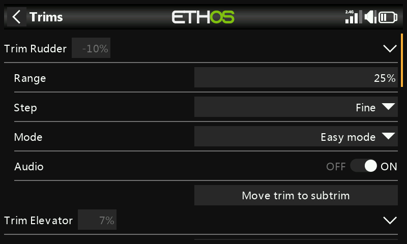
配置各摇杆的微调范围、步长与行为，以及交叉微调和即时微调。X20 Pro/R/RS 与 X18 另外提供两个微调开关 T5/T6，可在飞行中对四个主摇杆之外的项目进行调整：
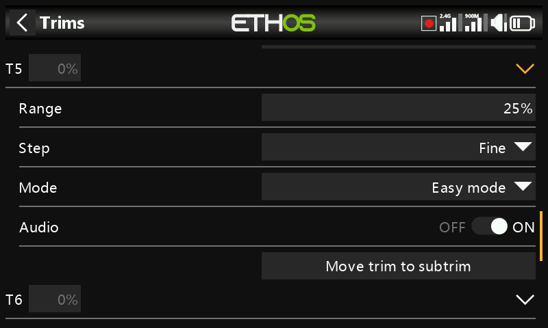
每个摇杆都拥有各自独立的一套微调设置。
微调设置¶
- 范围 — 默认为 ±25%，最大可调至摇杆的全行程 ±100%。在主显示界面上，默认范围的微调读数为 −100 至 100；全范围（100%）的微调读数为 −400 至 400（即常规范围的 4 倍）。
!!! warning 扩大范围后，微调片按住时间过长可能会加入过多微调量，导致模型无法飞行。
- 步长 — 微调开关的调整精度：极精细、精细、中等、粗略、指数（中心附近精细、远离中心变粗）或自定义（每次点击对应指定的百分比）。
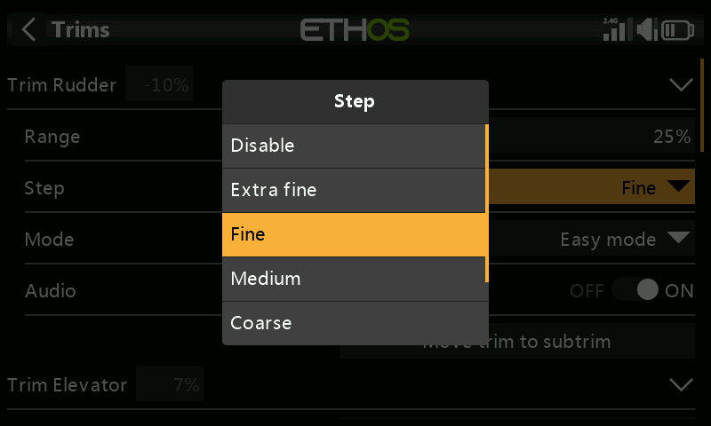
| 步长 | 每次点击的 µs 变化量（25% 范围） |
|---|---|
| 极精细 | 0.5 |
| 精细 | 1 |
| 中等 | 2 |
| 粗略 | 4 |
| 指数 | 0.3–16 |
自定义，在 25% 范围下：步长 1% = 1µs/次，步长 100% = 128µs/次。在 100% 范围下：步长 1% = 5µs/次，步长 100% = 512µs/次。
模式¶
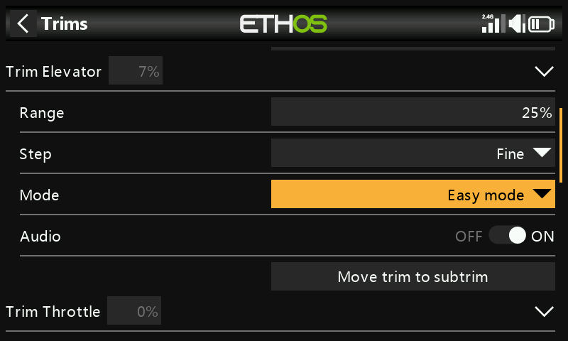
默认情况下微调始终有效，但模式可以改变这一行为。切换模式会将该微调复位为 0。
- OFF — 完全禁用该微调。
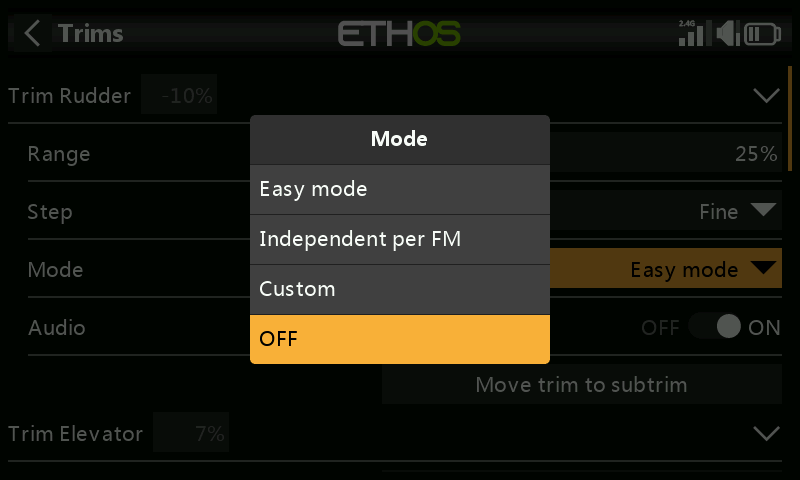
例如电动模型不需要油门微调时即可使用；空闲出来的微调控制随后可改用于调整变量。
- 简易 — 所有飞行模式共用同一个微调值。副翼和方向舵通常选用此项，因为它们很少需要按飞行模式区分。
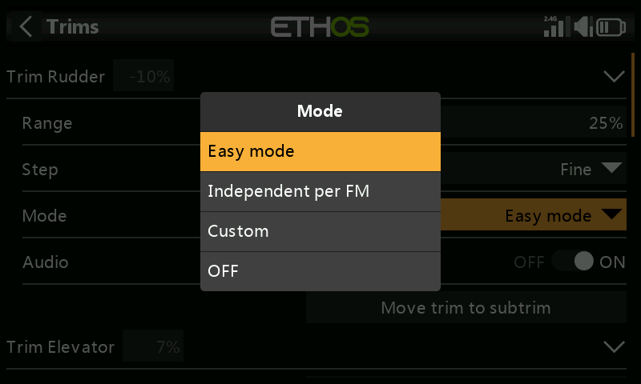
- 各飞行模式独立 — 微调仅影响当前激活的飞行模式。升降舵微调通常选用此项，因为升降舵微调常常需要随飞行模式不同而变化（例如机翼弯度改变）——事实上，这往往正是设置飞行模式的主要原因。
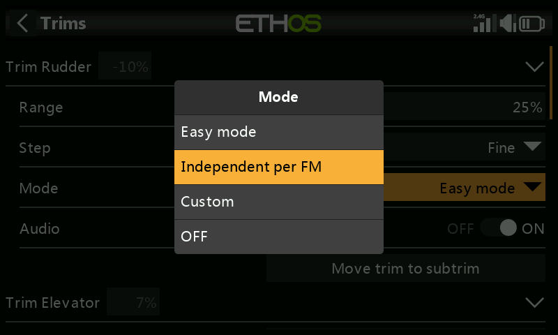
- 自定义 — 完全自定义行为，由你自行添加的行为条目构成。
自定义微调行为¶
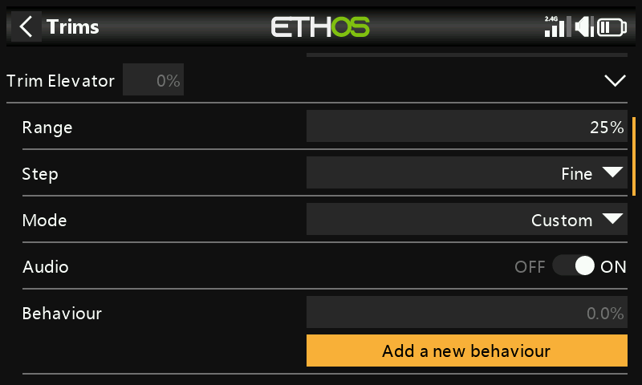
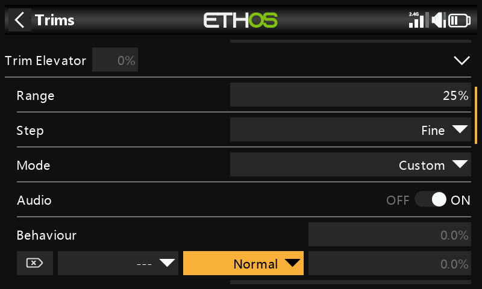
每个行为条目包含一个条件，以及下列之一：
- 未接入（Unplugged） — 在该条件下有选择地禁用微调（而不是用 模式 = OFF 直接彻底关闭）。
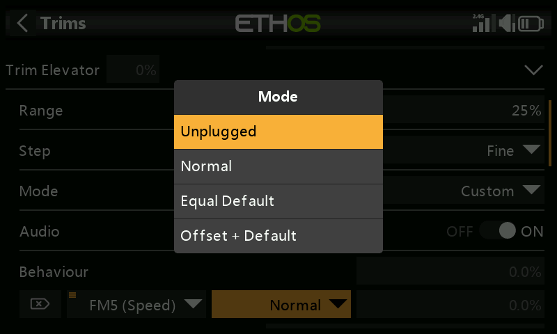
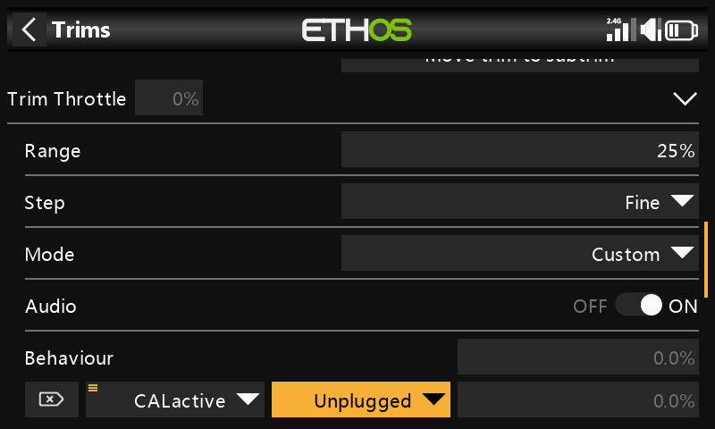
- 正常（默认） — 常规的微调行为。
- 等于（另一个微调） — 该微调完全跟随另一个条件下的微调值。
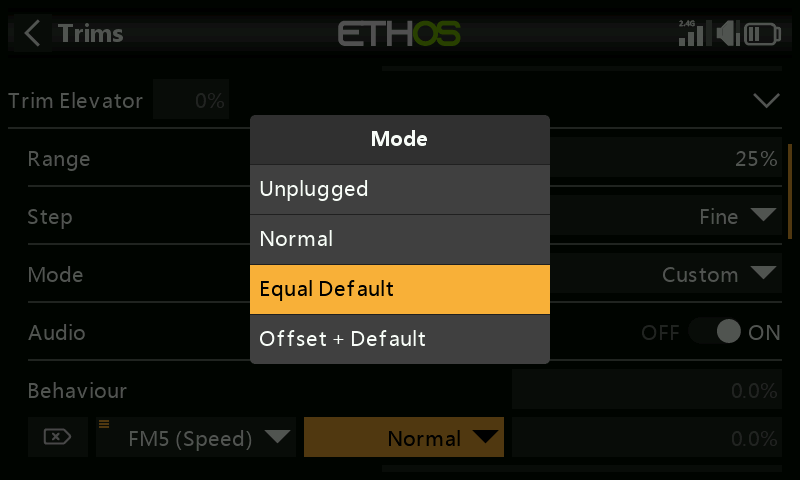
- 偏移 +（另一个微调） — 该微调叠加在另一个条件的微调值之上。
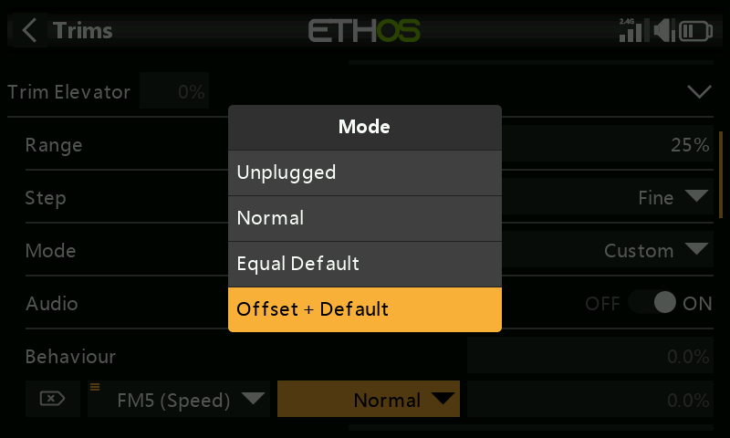
实例演示 — 一架滑翔机，以 Cruise（巡航） 作为升降舵基准微调，Speed（高速） 与 Thermal（热气流） 的微调依赖于它：
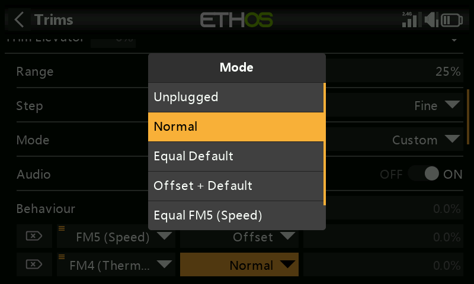
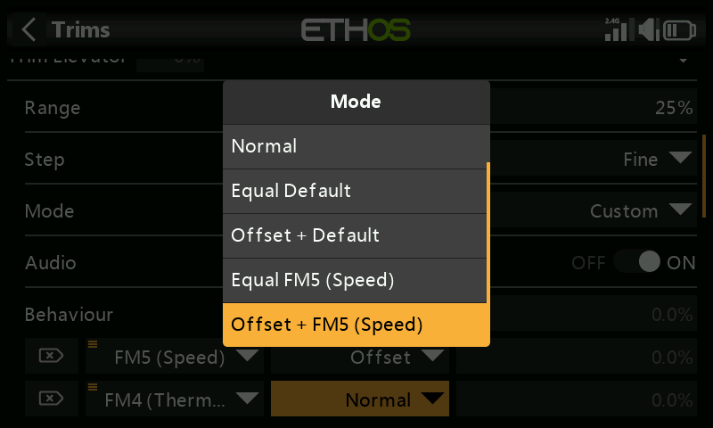
- 在默认模式（Cruise）下调好平飞微调。
- 添加一个行为：偏移 + Default，条件为
FM5(Speed)。此后在 Speed 模式下所做的任何微调调整都会作为叠加在 Cruise 基准值之上的偏移量保存——既相互独立，又依赖于基准值。
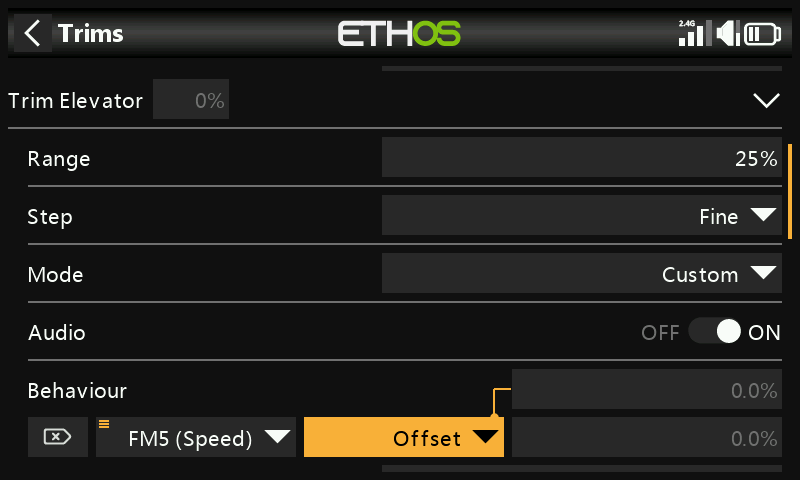
- 以同样方式添加第二个行为：偏移 + Default，条件为
FM4(Thermal)。（第一个行为建立之后，对话框还会提供Equal FM5(Speed)和Offset + FM5(Thermal)等选项，因为此时也可以引用该行为。）
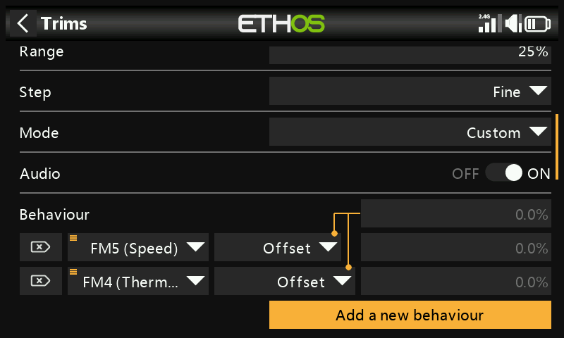
这样设置之后，日后调整 Cruise 基准微调（例如更改重心之后），Speed 与 Thermal 的微调会自动同量平移，因为它们是叠加在基准值之上的偏移量，而不是各自独立的数值。
- 音频 — 若某个微调已被改作其他用途、原有播报不再有意义，可关闭其标准微调播报。
附加微调¶
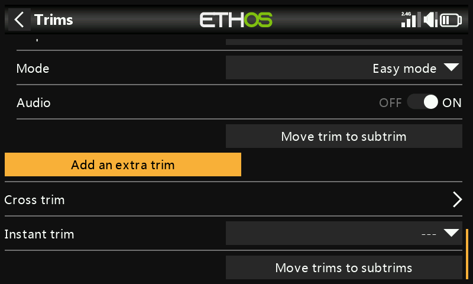
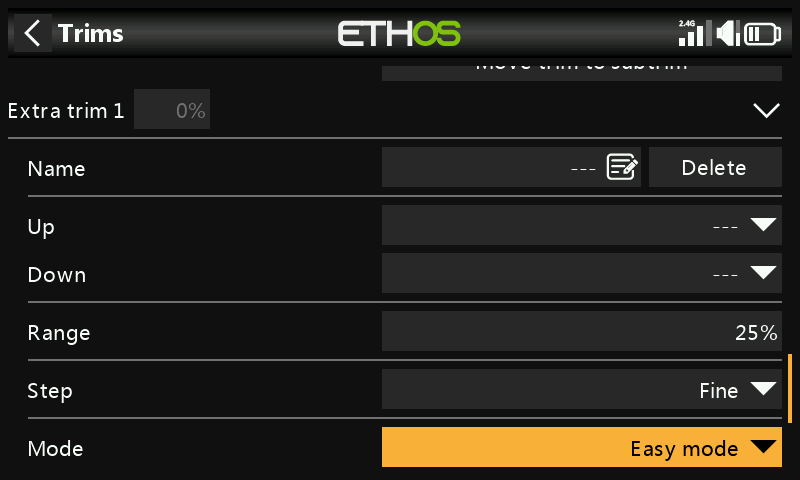
添加附加微调可创建四个标准摇杆（以及 T5/T6）之外的微调项：包括名称、用于驱动它的增加/减少信号源，以及与上文相同的范围、步长、模式和音频选项。
交叉微调¶
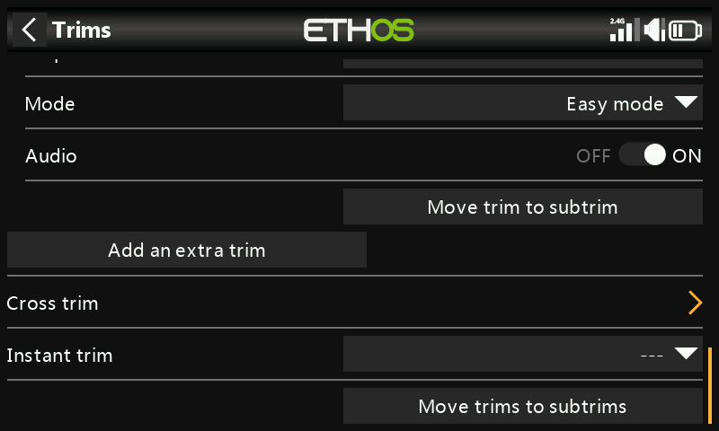
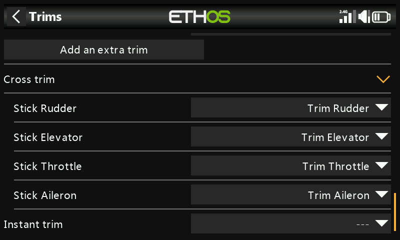
指定实际用于调整各摇杆的微调开关——即让某个摇杆的微调由与常规不同的物理微调控制来驱动。（T5/T6 仅在 X20 Pro 和 X18 上可用。）
即时微调¶
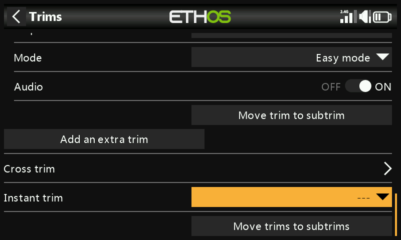
激活期间，会将当前摇杆位置加入对应的默认（以及交叉）微调中。最好将其指定给无需松开摇杆即可操作的开关——在平直飞行时触发即可瞬间设定微调，避免在微调偏差很大时反复点击微调片。完成配平飞行后请重新禁用它，以免日后误触打乱微调。
Note
即时微调仅在查看某个主界面视图时有效。
将微调移入子微调¶
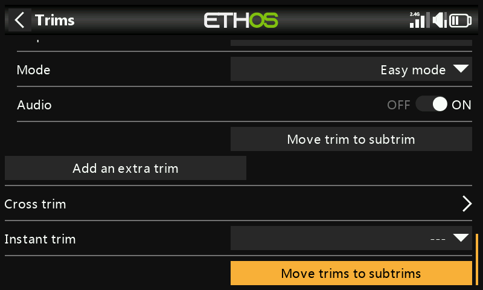
在完成平飞配平之后，此功能将某通道的微调值（例如升降舵）移入其子微调设置，并将屏幕上的微调复位为零——这是一种便于日后确认飞行微调是否发生漂移的清晰做法。
在使用飞行模式的情况下，一个通道可能有多个相关的微调值，而“输出”中的子微调是应用于所有飞行模式的单一全局设置。本功能已考虑到这一点：它取当前所选飞行模式的微调值，将其移入子微调，复位该微调，并对同一通道上其他所有飞行模式的微调作出相应补偿——因此每个飞行模式的实际舵面位置总体上保持不变。
Tip
为保持一致性，请始终在同一个“基准”飞行模式下执行此操作（例如滑翔机的 Cruise）——只要坚持这一点，该操作可以安全地重复使用。
过大的微调或子微调值会造成舵面行程严重不对称——更好的做法是从机械上解决根本原因。舵面处于中立位时，应使连杆尽量呈 90°（襟翼是例外，可牺牲部分上行行程以换取更大的下行行程），待连杆接近到位后，再用 PWM 中心点微调至精确的 90°。